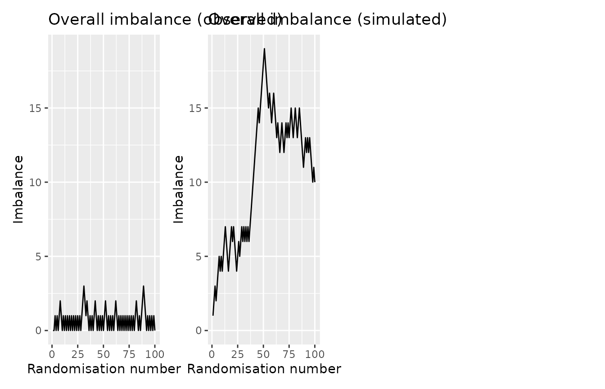

Assessing imbalance
imbalance.RmdWhen running a trial, it may be useful to periodically check how well balanced the randomisation is. This is especially true where procedures relying on random elements such as minimization are used instead of pre-defined randomisation lists.
randotools provides a couple of tools to assist in
assessing how well balanced the randomisation has been performed.
Dataset
As an example, we will use a dataset that is included within the package:
data(rando_balance)
summary(rando_balance)
#> strat1 strat2 rando_res rando_res2
#> Min. :0.0 Min. :0.0 Length:100 Length:100
#> 1st Qu.:0.0 1st Qu.:0.0 Class :character Class :character
#> Median :0.5 Median :0.5 Mode :character Mode :character
#> Mean :0.5 Mean :0.5
#> 3rd Qu.:1.0 3rd Qu.:1.0
#> Max. :1.0 Max. :1.0The dataset contains four variables:- two stratification variables,
and two randomisation variables. One randomisation variable,
rando_res has balanced randomisation. The other,
rando_res2, has a small degree of imbalance.
Sequential plots
The imbalance_seq_plots function aids in plotting the
imbalance as a function of randomisation number (assuming that the data
is sorted from oldest to newest).
This function produces up to 6 plots, so the patchwork
package comes in useful for combining the plots via
wrap_plots.
library(patchwork)
imbalance_seq_plots(rando_balance,
randovar = "rando_res") |>
wrap_plots(ncol = 2)
On the left we see the balance in the observed data. On the right, we see a simulated dataset with completely random assignment. We would generally want the observed curve to be below that of the randomly generated data.
Where stratification variables are included, additional plots are shown with lines for each level of the the stratification variable(s) (the second row) and the specific strata (the combination of each stratification variable; the last row).
imbalance_seq_plots(rando_balance,
randovar = "rando_res",
stratavars = c("strat1", "strat2")) |>
wrap_plots(ncol = 2)Testing imbalance
We also provide a permutation-type test, and accompanying plot, for comparing the observed randomisation imbalance with multiple simulated datasets. The null hypothesis for the test is that imbalance is lower or equal in the random data than relative to observed data. As such, we want a small p-value.
imb <- imbalance_test(rando_balance,
randovar = "rando_res2",
stratavars = c("strat1", "strat2"))
imb
#> Randomisations to date: 100
#> Overall imbalance: 6
#> Probability of equal or less imbalance from random allocation: 0.498
#>
#> Randomisation stratified by strat1 and strat2
#> Maximum observed imbalanced within stratifying variables: 4
#> Probability of equal or less imbalance from random allocation: 0.355
#> Maximum observed imbalanced within individual strata: 5
#> Probability of equal or less imbalance from random allocation: 0.364The corresponding plots show the frequency of imbalance values in the random datasets (the bars). The red vertical line indicates that from the observed data. Ideally, the observed line would be to the left of the plot. The p-value is indicated bottom right.
imbalance_test_plot(imb)